1كاتب السلسلة
9:00 الصبحكل يوم حلقة جديدة من «بتعلّم Claude قدامكم»: يكتب، يسجّل بصوتي، يعمل المونتاج، ويجدول حلقة بكره عشان تنزل 9 الصبح.
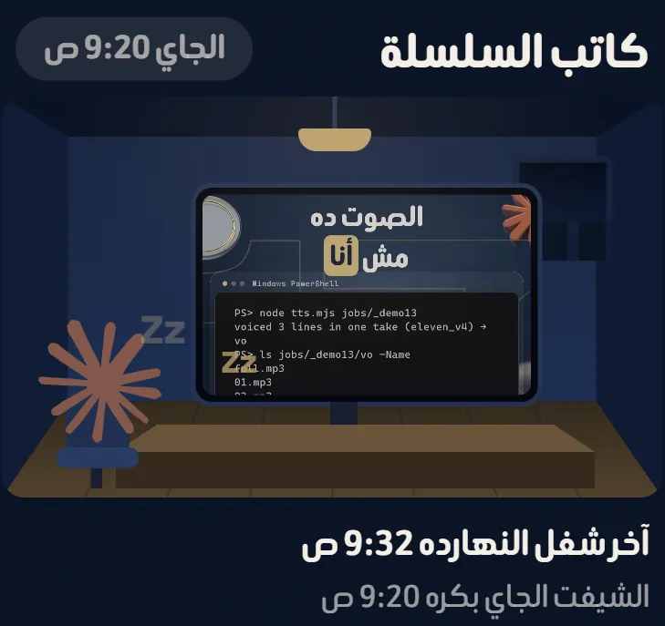
ده الكلام اللي في ريل «فتحت شركة». كل موظف هنا مهمة مجدولة في Claude ليها ميعاد، بتصحى في ميعادها وتعمل شغلها لوحدها، وأنا آخر واحد في السلسلة: بشوف وبدوس «موافق». كل صورة في الصفحة دي من الشغل الحقيقي، مش رسم.
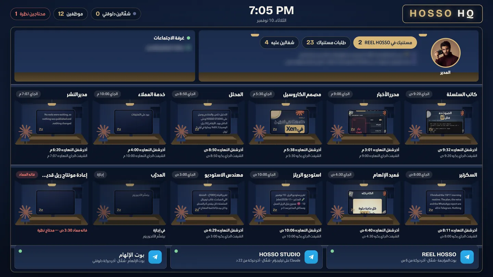
هنزّل ريل يشرح الموضوع بالتفاصيل، كل موظف بيعمل إيه وإزاي تعمله. تابعني على hossovisuals.ai عشان مايفوتكش.
المواعيد بتوقيت الإمارات. كل واحد فيهم بيصحى لوحده في ميعاده، ولازم جهازي يكون شغّال في الميعاد.
كل يوم حلقة جديدة من «بتعلّم Claude قدامكم»: يكتب، يسجّل بصوتي، يعمل المونتاج، ويجدول حلقة بكره عشان تنزل 9 الصبح.

3 مرات في اليوم بيدوّر على خبر Claude جديد ومتأكد منه من مصدرين، يعمله ريل بصوتي وصفحة خطوات على الموقع، وينزله على إنستجرام وتيك توك وفيسبوك.
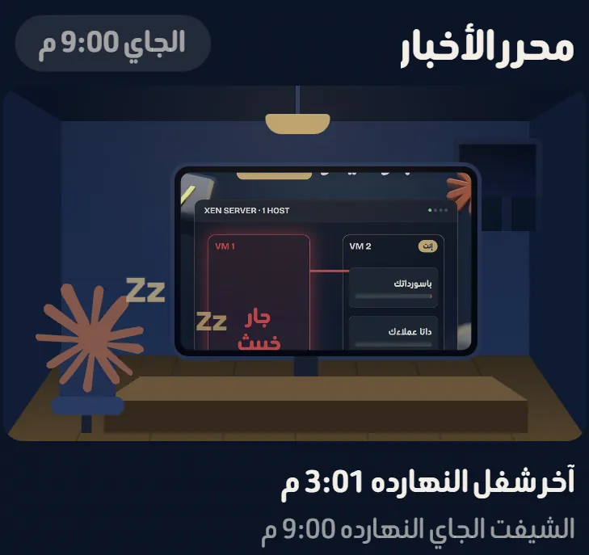
كل يوم 5:30 بيعمل كاروسيل بالهوية من خبر النهارده أو نصيحة Claude، يشيّك على كل شريحة، وينزل 6 المغرب.
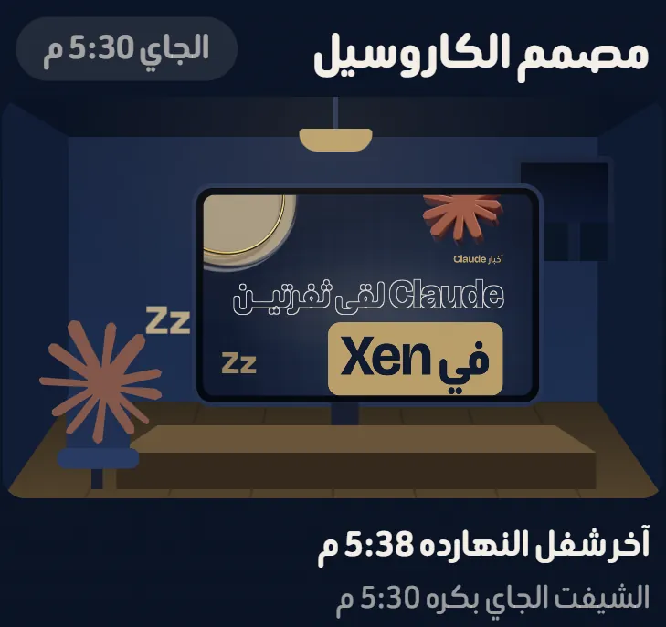
كل ليلة بياخد ريل قديم أرقامه ضعيفة، يكتب تشخيص الناس مشيت فين ليه، ويعيد المونتاج بالهوية الجديدة ببداية أقوى.
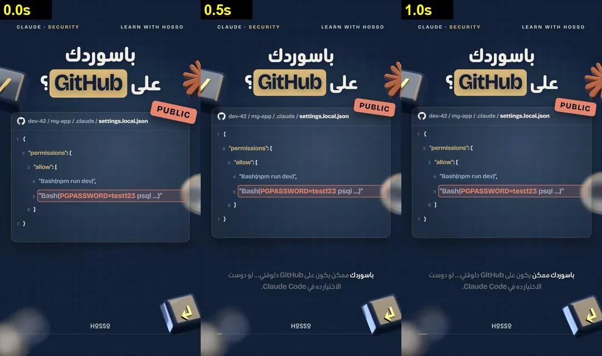
مش موظف بميعاد، ده البوّاب: أي ريل لازم يعدّي عليه قبل ما ينزل. بيسمع الصوت، يشوف أول كلمة، الطول، الهوية، والمزيكا، ولو فيه غلطة بيقول «ممنوع ينزل».
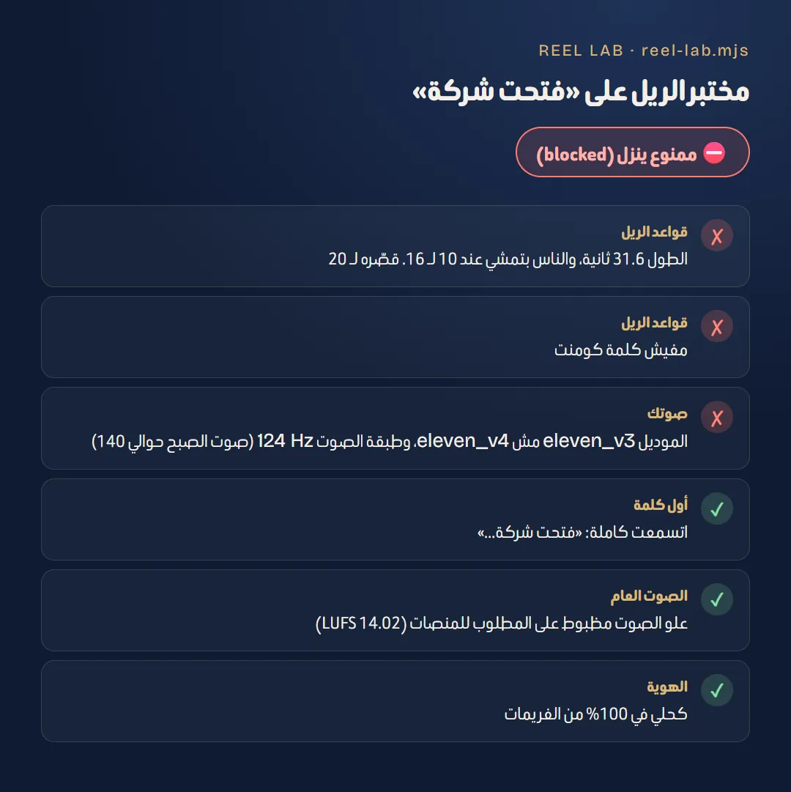
3 مرات في اليوم بيفتح تيك توك ويرد على كل كومنت جديد على حسابي لسه محدش رد عليه.
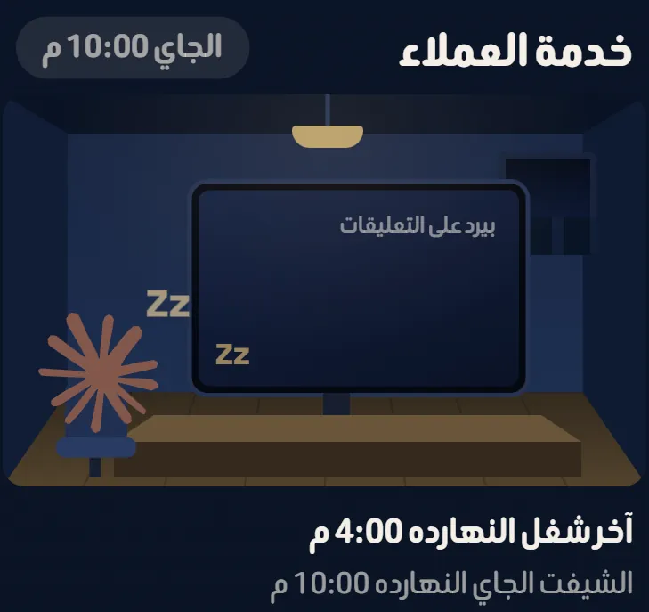
أول واحد بيصحى: بيلف على حسابات Claude والـ AI، يكتب فكرة وسكريبت اليوم، يسجّل الصوت، ويبعتلي الخطة على تيليجرام.
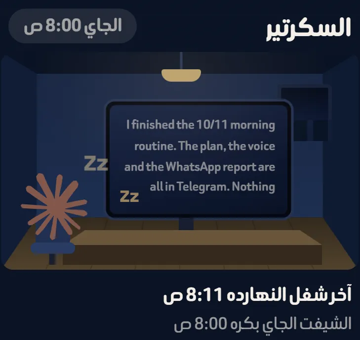
كل صبح بيقرا أرقام كل ريل: الناس مشيت عند ثانية كام وليه، ويطلّع درس اليوم واقتراحات للريل الجاي.
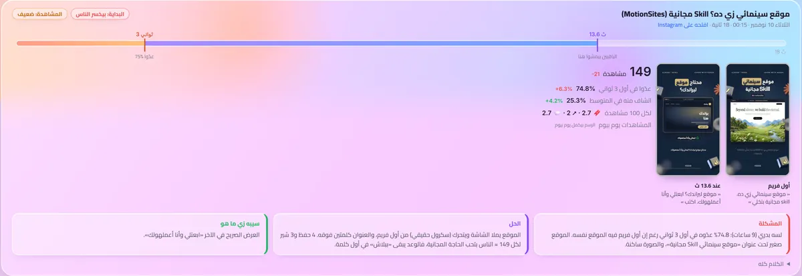
كل ريل عاجبني بابعته لبوت الإلهام فيتحفظ في المكتبة. وكل يوم موظف بياخد واحد منها ويعمله بهويتي وأفكاري.
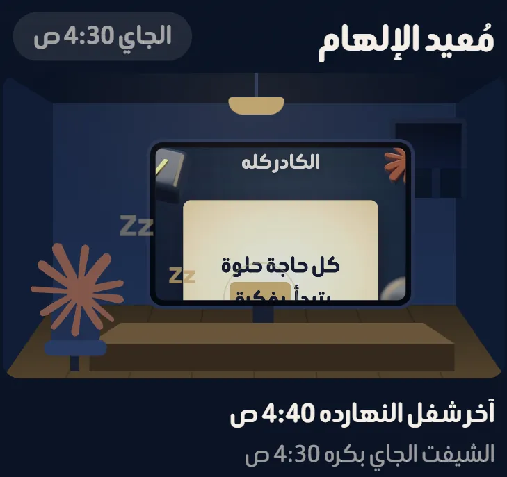
الريل اللي محتاج رأيي بيوصلني على تيليجرام في بوت REEL HOSSO. بدوس «موافق» فينزل، أو «عدّل» وأكتب ملاحظتي. وكل ساعة مدير النشر بيشوف اللي وافقت عليه ويجدوله.
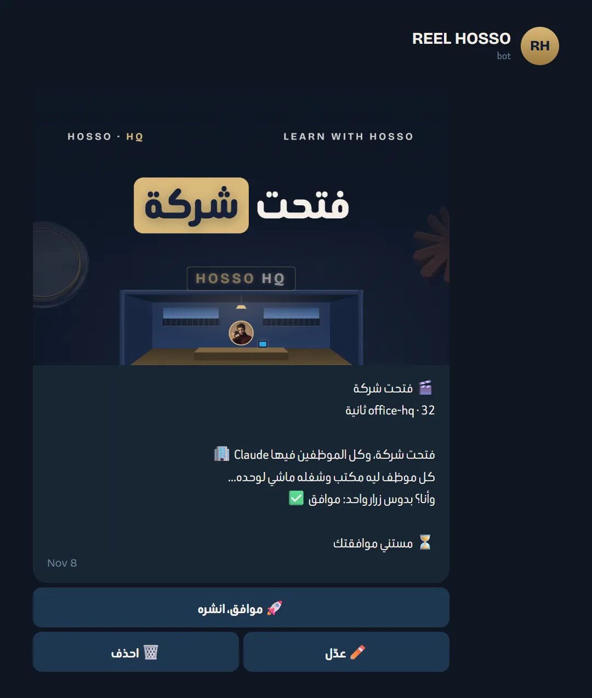
مش سحر ومش بيتعمل في يوم. ده اللي أنا عامله فعلًا، خطوة خطوة:
ده اللي بيشتغل بجد: بيقرا الملفات، يشغّل أوامر، يعمل مونتاج بالكود ويرفع على الموقع. ابدأ بمهمة واحدة بتعملها كل يوم بإيدك، واطلبها منه بالكلام لحد ما تطلع مظبوطة.
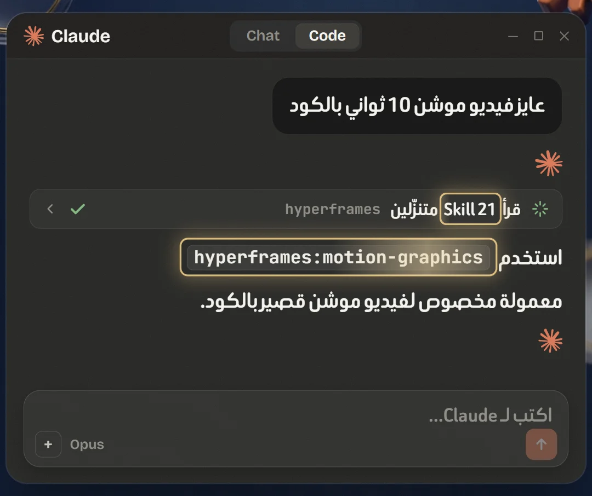
لما المهمة تشتغل كويس، اكتب خطواتها في ملف واحد واعملها Scheduled task في Claude بميعاد ثابت. كده بقى عندك موظف. كل موظف عندي ملف خطوات بالقواعد بتاعته، وبيتعلّم من غلطه.
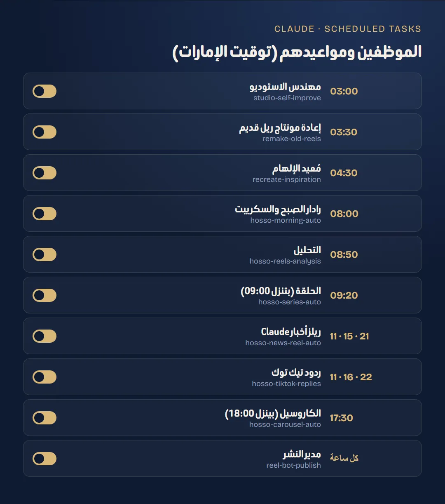
عشان مفيش حاجة تنزل من غير ما أشوفها: الموظف يبعت الشغل لبوت تيليجرام بزرار «موافق». الضغطة دي هي الإذن، والموظف اللي بعدها هو اللي بينشر.
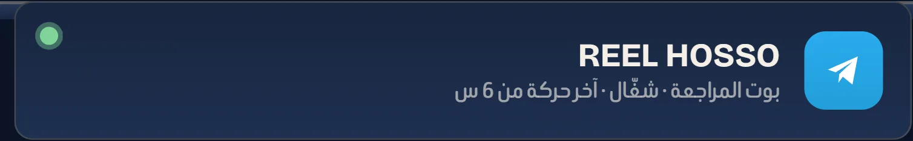
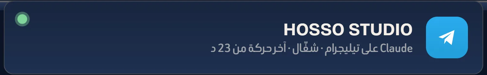
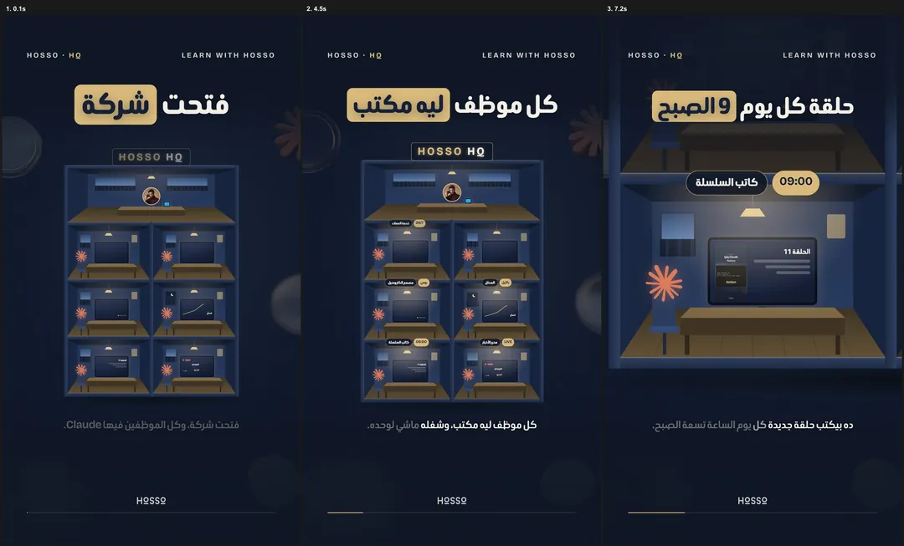
لو عندك شغل بيتكرر كل يوم، محتوى أو ردود أو تقارير، أقدر أعملّك موظفين زي دول لشغلك.